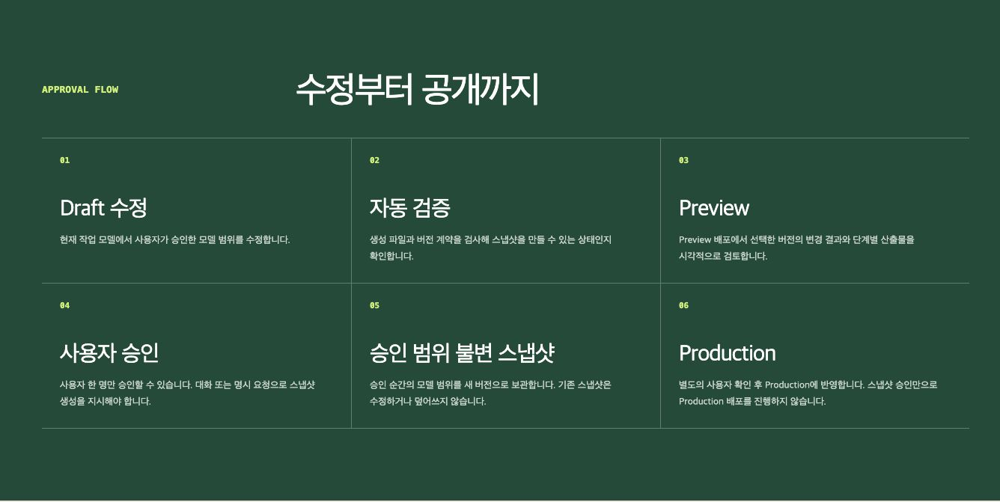

우클링
공방 강사가 수업을 개설하고 수강 신청을 관리하는 서비스입니다. 원데이클래스와 만남을 결합한 ‘하루연애’를 함께 소개하며 고객을 모집했습니다. 저는 서비스의 데이터와 API를 설계하고, 신청과 관리자 기능을 구현하며 공식 채널을 관리했습니다.
API 계약과 구현 기준
업무 용어를 논리 모델, 물리 컬럼, ERD와 OpenAPI로 연결했습니다. 외부 API 동작 109개의 요청과 응답, 권한, 오류, 재시도 규칙을 담은 명세를 작성하고 보완했습니다.
관리자 조회에서 ID 형식 오류는 400, 0과 음수는 422로 구분했습니다. 목록의 생성일과 ID 정렬을 커서 기준에 맞추고, 명세의 참조와 예제를 검사하는 검증 코드에도 반영했습니다.
109개는 2026.11.16 명세 기준입니다. 팀 저장소와 Swagger 열람에는 팀 권한과 인증이 필요합니다.
백엔드 구현과 실패 복구
- 회원가입. 프로필 생성이 중단돼도 기존 회원 ID와 최초 약관 동의를 보존해 가입을 이어가도록 했습니다.
- 수강 신청. 정원 선점과 금액 보존, 신청 확정을 연결했습니다. 중복 요청은 같은 처리 결과를 사용하고, 취소 확인 뒤 정원을 한 번만 복구하도록 구현했습니다.
- 관리자 홈. 추천과 시즌 수업을 한 트랜잭션으로 저장하고 편집 버전 충돌을 검사했습니다. 교체한 이미지 정리는 DB 커밋 이후 실행합니다.
본인 작성 후 병합된 PR입니다. 팀 저장소 접근 권한이 필요합니다.
Codex 활용과 설계 검토 도구
Codex에 초안과 구현, 검증 작업을 맡기고 채택한 결정과 보류한 이유를 남겼습니다. 용어마다 생성기를 두자는 제안은 관리 부담을 고려해 공통 용어표 하나로 줄였습니다.
설계 원문, 테이블 관계, 변경 내역을 같은 버전으로 보는 탐색기를 직접 설계했습니다. 자동 검사와 미리보기를 거쳐 승인한 버전을 저장하고, 이전 판단을 다시 확인하도록 구성했습니다.

공식 Instagram 운영
공식 계정에서 지역별 공방과 클래스, 닉네임 참여 방식과 모집 일정, 현장 후기를 안내했습니다. 카드뉴스와 프로필 신청 링크로 참여 방법을 전달했습니다.
팀이 공개한 10월 신청자 241명(참가 대기자 포함)과 참가 후기를 크리스마스 모집 콘텐츠에 활용했습니다.
신청자 수는 공식 계정에 게시한 팀 운영 집계입니다. 2026.11.17 확인.